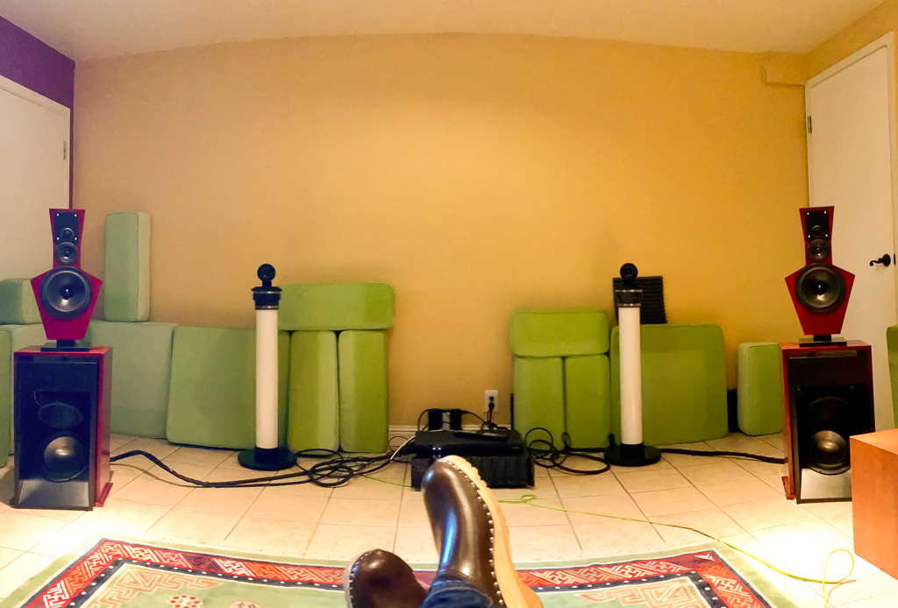

This is a follow-up to my previous post on how did I came to this place, so an interested reader should head there first.
After about a year of working on this on and off, I now have complete setup of the best work of Siegfried Linkwitz with a pair of LXMinis, a set of W-Frame subwoofer dipoles based also on his design, and the simply spectacular LX521.4 full range dipole speakers. This setup as pictured above, is an audiophile’s dream.
I was around 12 back in Chile when I first got into this world of audio. I disassembled my relatives’ speakers just to see what was inside. I experimented with crossovers and cables, and of course, I was fascinated with the theoretical aspects of how to achieve musical perfection.
Reproducing recorded material to make you believe you are in front of live music is the ultimate art form. Just like magicians, that make you believe things that you know are not possible: the art of deception. Audio reproduction is not different.
I’ve had the chance to listen to speaker systems that are really amazing, but in most cases, your mind knows you are not in a live concert.
Enter the LX521.4. Mr. Linkwitz came to this design with key assumptions about how we perceive auditory reality. His design are dipolar and open baffle, with precisely engineered controls of phase, frequencies, volume and every parameter that can be controlled. His original design for this system uses a MiniDSP 8x10HD as a DSP which allows for an incredibly precise level of control. However, recently, he published a design for a fully analog active signal processor, which I purchased fully built, and it’s what I’m currently using.
The choice of Seas drivers (made in Norway) is absolutely spot on. Each driver has its own amplification so every aspect that can be controled is being controled. Mr. Linkwitz himself provided concrete feedback to Seas on the some of these drivers, particularly the subwoofer, ideal for dipole and open baffle applications. This use case puts extreme loads in the drivers, with large excursion ranges, so this doesn’t get more customized than this.
The room is obviously the most complicated part of the equation. These speakers by virtue of being open baffle design, make the room part of the experience. They do require space to breathe, and reflections that are too harsh will affect the sound quality, but the reality is that these speakers will shine in most normal setups. My “man cave”, is very harsh, so I’m experimenting (as you can tell in the picture) with the proper location of dampening material. Right now, just cushins from my patio set, conveniently repurposed for the winter, but I plan to purchase nice and decorative difusers once the locations have been determined.
As the reader may have already obvserved from my previous post, I was already extremely pleased with the LXMini and LXStudio configurations. But now listening to the LX521.4 in its entire glory, I can see why the addition of a large mid woofer and tweeters in a dipole configuration were so important in this design.
No matter the material, you are fooled every time and feel you are part of the audience, particularly with good live recordings. I’ve tested Jazz, classic Rock, Pop, Metal, Electronica, you name it, and I yet have to find something that doesn’t sound like being there. You can move around the room without loosing the sweetspot. The speakers blend with the environment in ways I had not experienced before.
In a way, I feel this is the end of my road as an audiophile always looking for a better speaker. I simply cannot imagine anything that can sound more realistic and complete. But as a tinkerer, I can’t stop. I will likely experiment with hybrid designs and other specific applications using horns and AMT devices. I’m looking at designs from Visaton like the Grand Orgue, the Monitor 890 Mk II and the NoBox 170, but that’s just because I’m a geek. I cannot be happier with the setup I have now.
Anyone who is a serious audio geek must figure out a way to build speakers using Siegfried Linkwitz’ designs. Really.
comments powered by Disqus